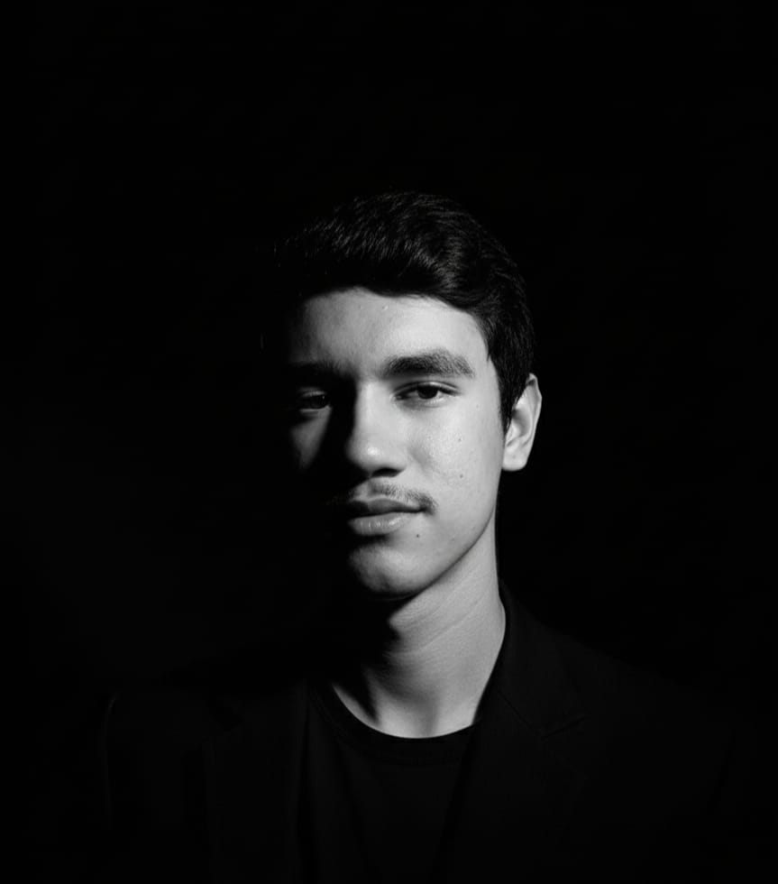

Dados Curriculares

Iohan Bryan da Silva Fortaleza
ESTUDANTE | Desenvolvedor Web em Formação
CONTATO
- Email: yohanbryan2000@gmail.com
- Telefone: 55 89 9928-3433
- Endereço: Rua Presidente Castelo Branco
EDUCAÇÃO
- Ensino Fundamental completo
- Cursando Ensino Médio
- Cursando Técnico Informática Senai
- Participação da 1ª á 3ª Edição da Amostra Científica
HABILIDADES
- Determinação
- Foco
- Criatividade
- Flexibilidade